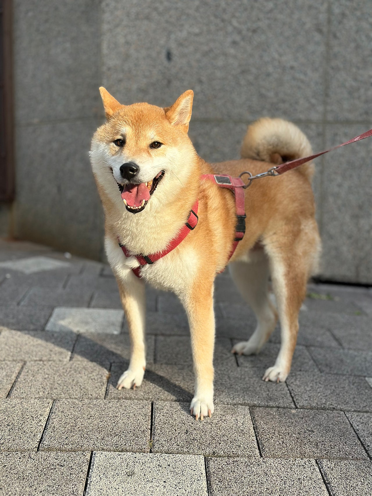
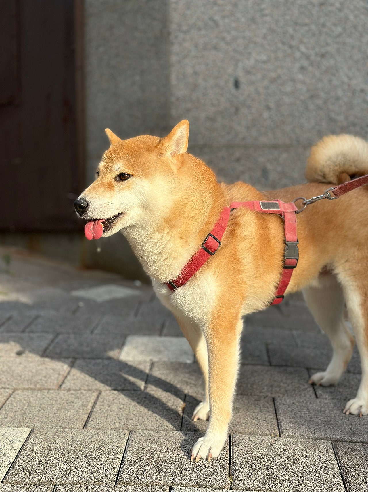
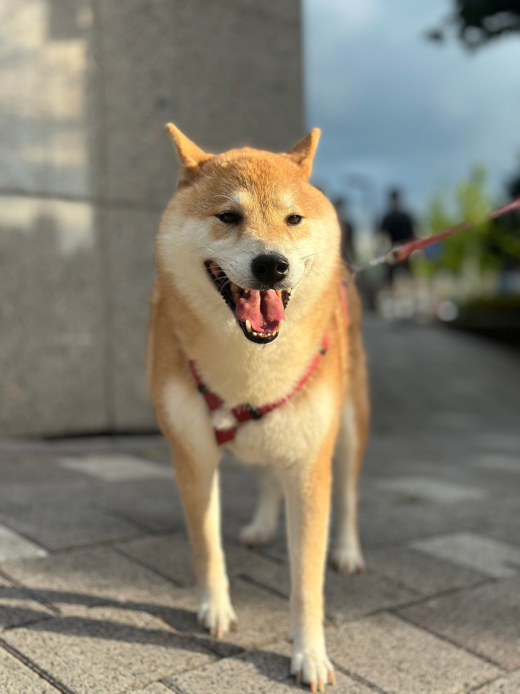
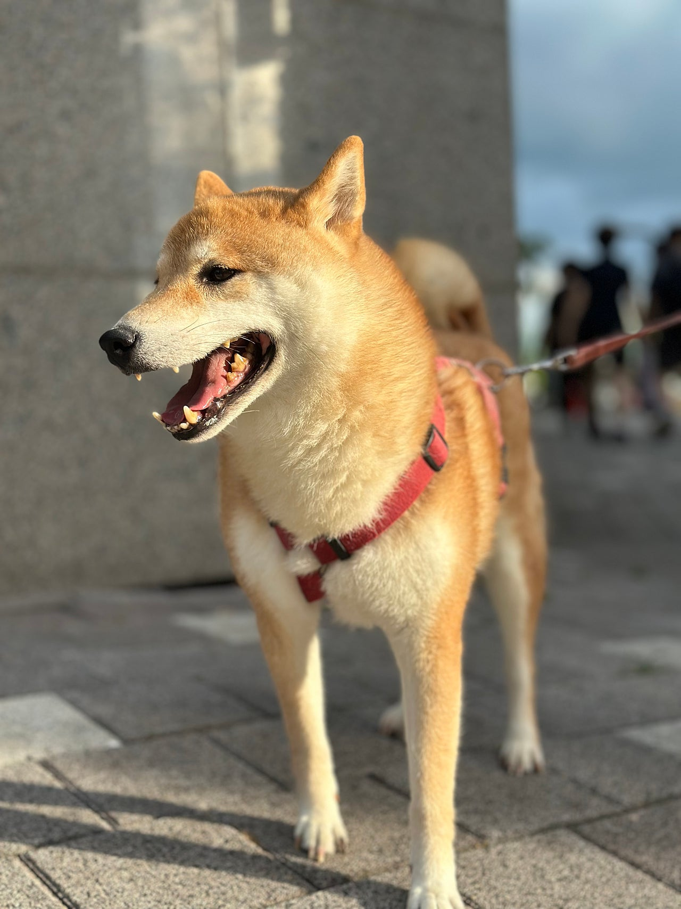

시바견 길산이의 기분좋은 산책!!


얼마전에 시바견 길산이가 새로 입소했어요낯선곳이여서 그런지 적응하기까지 쪼금 걸렸지만적응 끝나자마자 바로 산책 델고 나오기,,ㅋㅋㅋ나가자마자 마킹수준이 아닌한강을 싸버리는 길산이,,ㅋㅋㅋㅋㅋㅋ쉬 참았니..????하네스 착용하자마자 나가는걸 알아서신나서 헤헤 거리는 길산이를 보니산책을 더 자주자주 시켜줘야겠다 생각들더라구요길산이같은 시바견은 활동량이 넘처나기때문에산책을 정말 자주자주시켜줘야 하고산책 시간도 꽤 길어야 해요하지만 여기서는 길산이만 있는게 아니기때문에너무 오래 시켜주진 못해서 미안한 마음 뿐이랍니다 ㅠㅠ


그래두 한마리 한마리 좋은 가족을 만나서입양되는 걸 보면 그 미안한 마음이조금은 사라지는거 같아요다들 좋은가족을 만나 견생 제2막을 펼치면과거를 잊고 더 행복한 삶을 살겠죠?저는 이 아이들이 말을 했으면 좋겠어요 ㅠㅠ핸드폰 사주고 전화하라고 하고싶은 맘,,,ㅋㅋㅋㅋ그냥 어디가 아프다, 나는 어떤 삶을 살았었다지금은 행복하다 슬프다 이런 말,,,소통이 불가능한건 아니지만 그래두ㅠㅠ마음을 알수가 없으니 답답하긴해요그래서 더더 많이 사랑해주고 산책을 시켜주는거 같아요 ㅎㅎ


우리 착한 길산이가좋은 가족을 만날때까지아가펫언니의 산책은 멈추지 않습니다!!!!!!!!아참! 내일이 말복이래요!!닭이라도 사다가 삶아줄까봐요 ㅎㅎㅎㅎ0505-464-1004
댓글 19
쉬 참았니, 하는 문장에서 빵 터졌어요. 길산이다워요.
댓글로나마 쓰다듬고 갑니다. 잘 자라.
길산이 산책 글, 사진마다 밖으로 나가고 싶어 하는 얼굴이에요.
꼭 좋은 데로 가세요.
좋은 가족이 긴 산책을 약속할 수 있는 집이면 좋겠어요.
사랑받을 일만 남았으면 해요.
시바견 길산이 사진, 정말 나가자마자 기운이 넘쳐 보여요.
사진 보는 동안에도 좋은 가족이 생기길 빌었어요.
아이들이 많아서 오래 못 데려가 미안하다는 마음이 글에 있어요.
길산이, 좋은 가족 만나.
시바견 길산이, 기분 좋은 산책이라는 제목이 맞아요.
가족 되는 날이 하루라도 빨리 오면 좋겠어요.
활동량 많은 시바라는 글 읽고 나니 짧은 산책이 아쉬워 보여요.
길산이, 기다리는 동안도 건강히.
하네스 채우자마자 신나서 헤헤거린다는 장면이 보여요.
나가자마자 마킹이 아니라 한강을 싼다는 대목에서 웃었어요.
시바 특유의 표정이 글의 마킹 이야기랑 잘 붙어요.
미안한 마음 대신 입양으로 풀린다는 이야기가 이 글의 중심 같아요.
착한 길산이, 좋은 가족 만날 때까지 산책은 멈추지 않는다는 말이 든든해요.